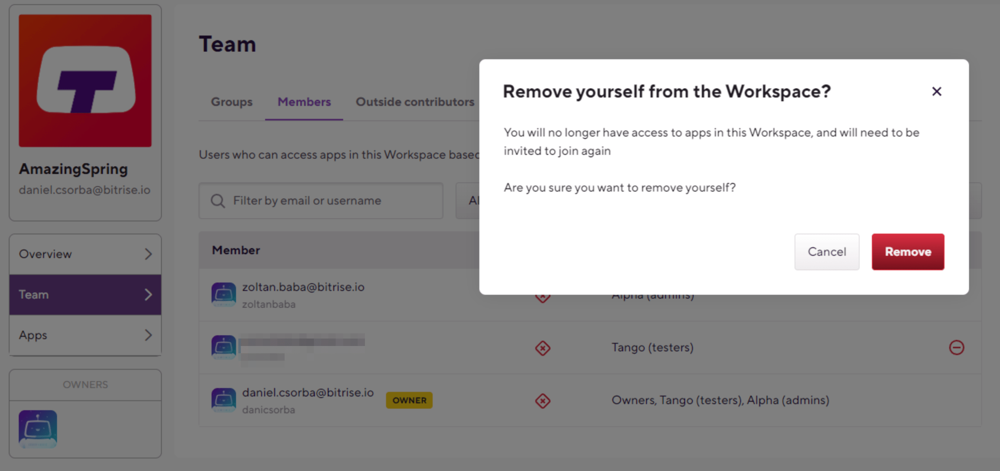

ワークスペースに関するFAQ
Bitrise Workspacesに関して最もよくある質問：それらは何ですか、そのアプリを管理する方法、メンバーとグループは何ができますか？
Bitriseのワークスペースとは何ですか？
ワークスペースは、社内のより大きなチームやメンバーをシームレスに管理するために使用されます。これは、会社の各アプリで作業しているすべての人を集め、さまざまなグループを作成して委任する場所です。
ワークスペースにアプリを追加するにはどうすればよいですか？
まず、ワークスペースの少なくとも1つのグループに追加する必要があります。次に、に移動します 新しいアプリページを追加する 左上のドロップダウンでワークスペースを選択します。
これは、アプリの追加プロセス全体で変更できます。または、アプリの追加が完了した後、アプリの所有権を譲渡することで所有者を変更できます。
既存のアプリをワークスペースに移行/転送するにはどうすればよいですか？
ワークスペースを作成したら、に移動して任意のアプリをワークスペースに転送できます。 Team 転送するアプリのタブをクリックし、 所有権を譲渡する 右上のボタン。
ワークスペース内の所有者とは何ですか？
ワークスペースには複数の所有者を含めることができます。所有者は、請求の管理、アプリの削除、請求メールの変更、グループの作成、削除、アプリへの割り当てを行うことができます。
ワークスペースの「メンバー」は何ができますか？
メンバーはに表示されます 人 ワークスペースのページのタブ。上のグループに含めることで、メンバーとして追加できます。 グループ タブ。これらのメンバーには、ワークスペースにアプリを追加し、ワークスペースのすべてのアプリのリストを表示するオプションがあります。 アプリ タブ。メンバーは、直接またはアプリを介してアプリへのアクセスが許可されている場合にのみ、ワークスペースのアプリにアクセスできます。
Group、割り当てられた役割（管理者、開発者、またはテスター）に関して。
グループは何に適していますか？
グループは基本的にメンバーのラッパーです。グループを作成することで、所有者と管理者は各アプリのチームに一度に複数のメンバーを追加できるため、Bitriseで新しいプロジェクトをすばやく簡単にセットアップできます。また、複数のメンバーの役割の再割り当て、削除、および変更が迅速になります。
各グループは、アプリの1つのエンティティとして処理されます チームタブ。それらをアプリのチームに追加したり、グループの役割を設定したり、アプリのチームからグループを削除したりすることで、アプリからそのグループのすべてのメンバーのアクセスを取り消すことができます。ただし、ワークスペースのページでのみ、グループの個々のメンバーを追加または削除することはできません。
チームとワークスペースの違いは何ですか？
チームはアプリごとに処理され、ワークスペースはグローバルに処理されます。
ワークスペースのアプリのチームには、直接または割り当てられたグループを介して招待されたメンバーを含めることができます。直接の役割を持つチームメンバーは、招待されたアプリにのみアクセスでき、ワークスペースにアプリを追加することはできません。チームのメンバーには、常に役割が割り当てられています（管理者、開発者、またはテスター）。
外部の貢献者は誰ですか？
外部の貢献者は、直接的な役割を持つアプリのチームのメンバーであり、ワークスペース自体には招待されず、ワークスペースのアプリにのみ招待されます。
複数のワークスペースを持つことはできますか？
1人のユーザーが好きなだけワークスペースを持つことができますが、ビルドを実行できるようにするには、各ワークスペースにアクティブなサブスクリプションが必要です。
ワークスペースのすべてのアプリから誰かを削除できますか？
ワークスペースの所有者である場合は、組織のメンバーと寄稿者を削除できます 人 タブ、ワンクリックで。所有者は、上のグループから誰かを削除することもできます グループ タブ。この場合、ユーザーはグループが割り当てられているすべてのアプリのチームから削除されます。
ワークスペースを退会するにはどうすればよいですか?
ワークスペースの所有者でない場合は、最初にワークスペースの設定にアクセスして (画面右上のワークプレイスの横にある歯車アイコンを選択)、ワークプレイスから退出することができます。 チーム 左側のメニュー オプションから、 メンバー タブをクリックし、「 」 アイコンがメール
アドレスの横に表示されます。
」 アイコンがメール
アドレスの横に表示されます。
メール アドレスの横に [ワークスペースから削除] アイコンが表示されない
脱退したいワークスペースの所有者である場合は、まず、所有者のリストから自分自身を削除する必要があります。 所有者 タブ (まだ所有者がいない場合は、新しい所有者も追加する必要があります)。詳細については、次を参照してください。 ワークスペースの所有者を変更する.
|  |